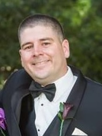

Justin Tercero

Web Developer
Professional Profile
Enthusiatic and ambitious Frontend developer with over 20 years of military service
Task-driven professional with proven success in responsive design, version control, and API integration. Passionate about software developmet with a keen eye for design utilizing a mobile first approach.
Professional History
- Nov 2019 - Dec 2023
Medical Programs Recruiter
Navy Talent Acquisition Group Golden Gate• U.S. Navy
Responsible for the sourcing, assessing and onboarding of healthcare professionals in the central valley for active duty programs in U.S. Navy Medicine.
- Sep 2016 - Nov 2016
Leading Petty Officer
3rd Marine Aircraft Wing
Led a team of 115 healthcare workers in delivering healthcare to over 2,000 beneficiaries in California and Arizona ensuring medical fitness for contingency operation around the globe
- Jul 2013 - Sep 2019
Medical Programs Recruiter
Navy Recruiting District San Francsico
Responsible for the sourcing, assessing and onboarding of healthcare professionals in Northern California for active duty and reserve programs in U.S. Navy Medicine
- Jun 2010 - Jul 2013
Leading Petty Officer Shock Trauma Platoon
1st Medical Battalion
Led a team of 33 in providing trauma stabilizing life support to forward deployed service members engaged in combat operations
Education
- Fresno City Collge
2023 -Present
Majoring in Computer Information Technology with concentration in Web Developmet
-
2023 Web Developmet Bootcamp, Dr. Anelge Yu
Sep 2023 - Present
- Front End: HTML5, CSS, Flexbox, Grid, Bootstrap, Javascript, DOM, jQuery,
- Back End: Node.js, Express.js, API, SQL, MongoDB, Mongoose, React.js
Awards
- Medical Recruiter of the Year FY 15
- Navy and Marine Corps Commendation Medal – Two awards
- Navy and Marine Corps Achievement Medal – Four awards
- Navy Recruiting Ribbon- Eight Gold Wreaths
Portfolio
About Me
Contact Me